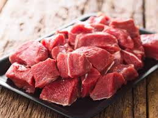

How to Cook Ugali and Meat
Ingredients
- 2 cups of maize flour (unga ya ugali)
- 4 cups of water
- 1/2 kg beef (cut into cubes)
- 1 large onion, chopped
- 2 tomatoes, chopped
- 2 cloves of garlic (optional)
- Salt to taste
- Cooking oil
- Coriander (dhania) for garnish
Step 1: Preparing Ugali
- Boil 4 cups of water in a sufuria until it starts bubbling.
- Gradually add maize flour while stirring with a wooden spoon to avoid lumps.
- Stir consistently until the mixture thickens and pulls from the sides of the sufuria.
- Let it steam for 2–3 minutes, then serve hot.
Step 2: Preparing the Meat Stew
- Wash and boil beef cubes in water until tender. Drain and set aside.

- Heat oil in a pan, then add onions and fry until golden brown.
- Add tomatoes (and garlic if using), stir and cook until the mixture softens.
- Add the cooked beef to the tomato-onion base. Simmer for 8–10 minutes.
- Season with salt and garnish with chopped coriander.
Serving Suggestion
For best results, serve hot with a side of sukuma wiki or spinach and a cold beverage. Enjoy your meal!